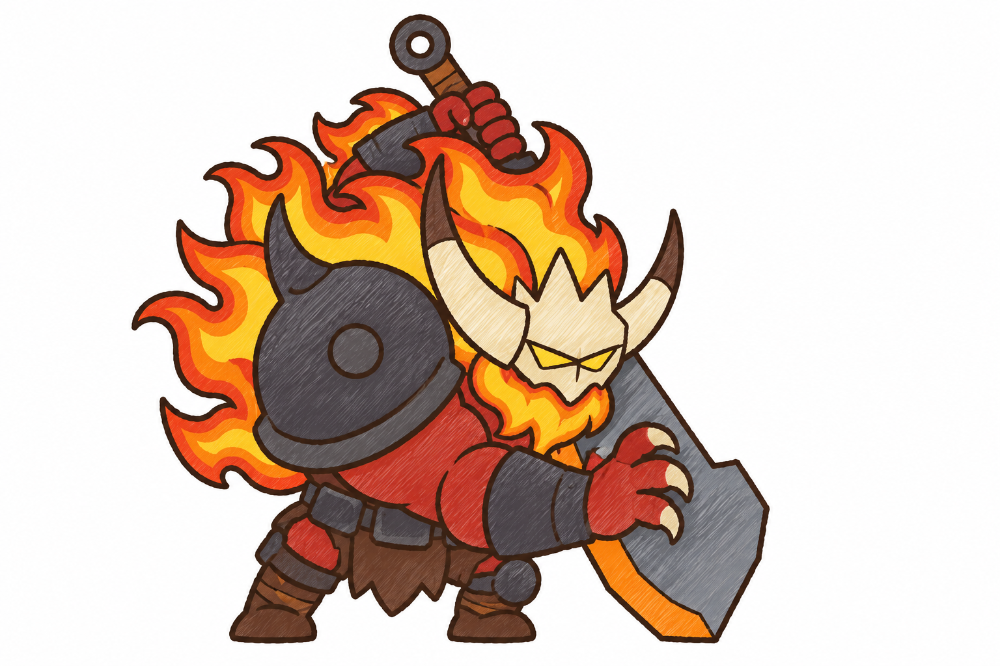
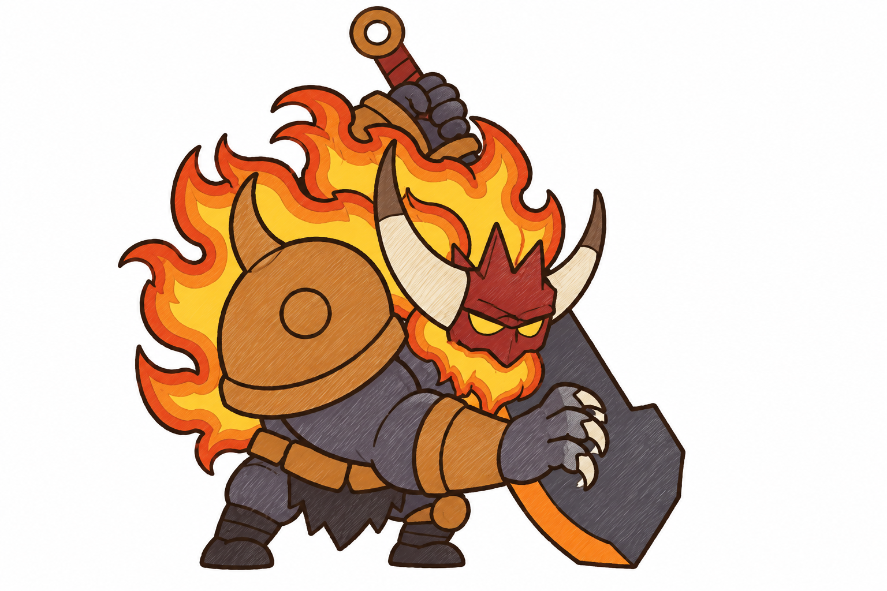
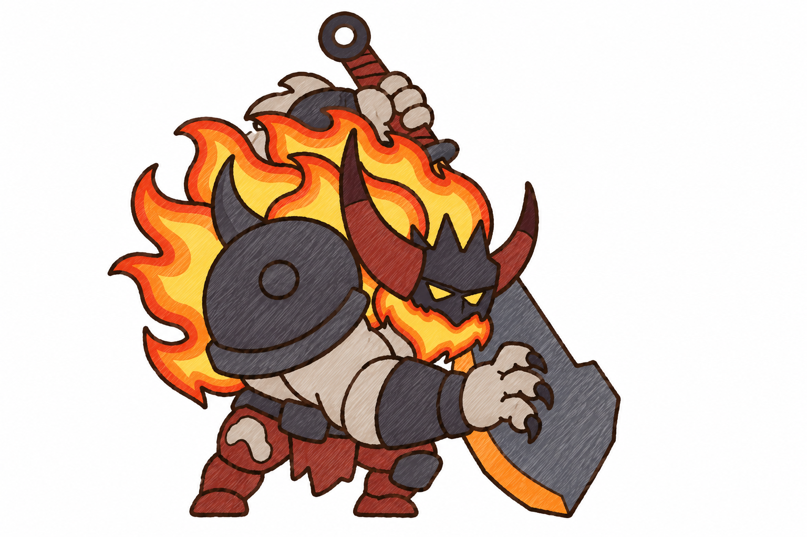
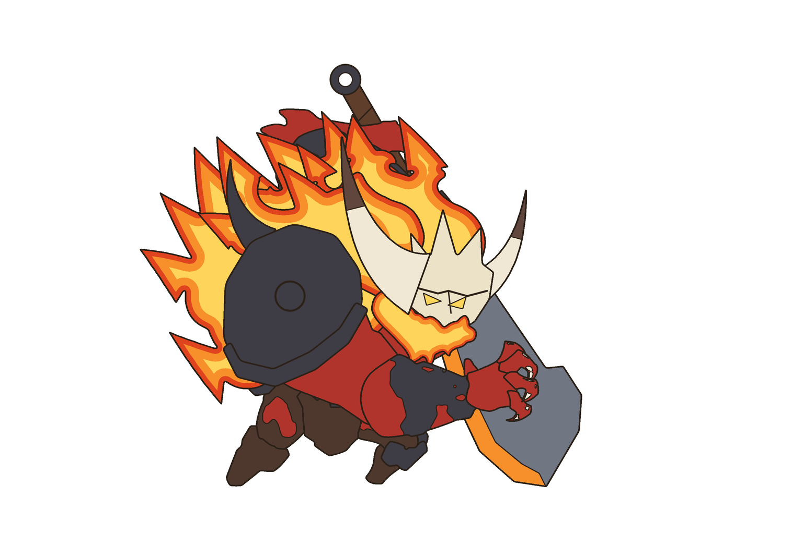
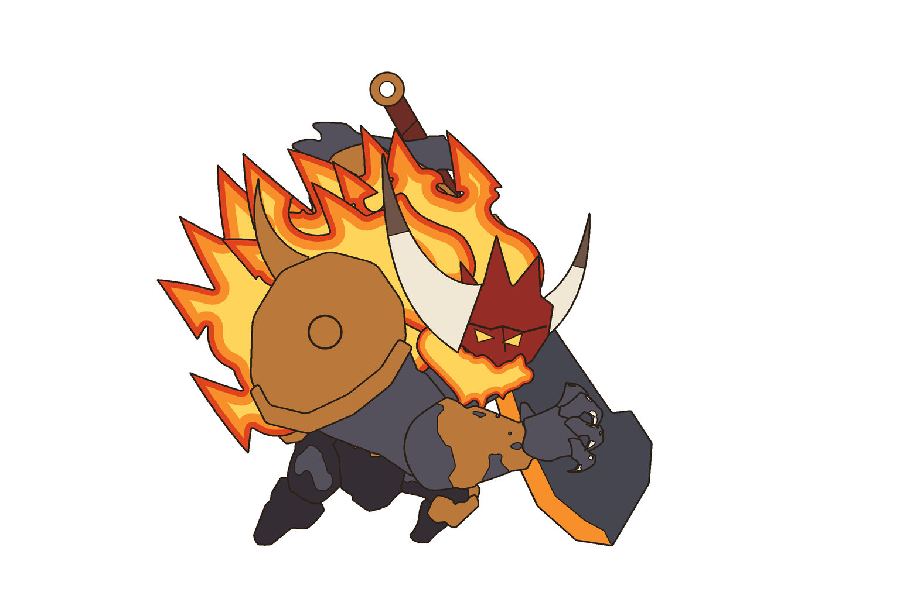
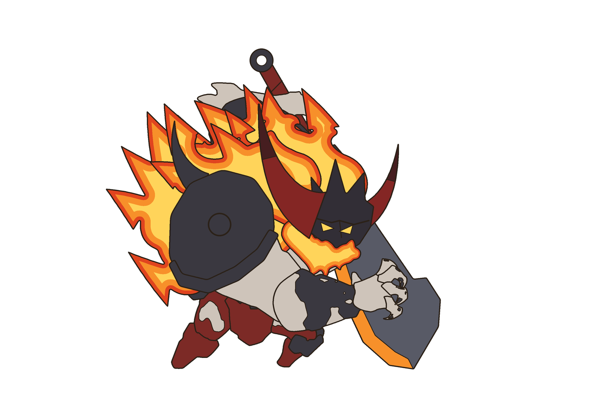

Giữ của con gốc: dáng quỷ lưng gù nhìn sang phải, tay gần to buông trước, tay xa vòng lên sau đầu nắm cán vũ khí, vũ khí khổng lồ dựng chéo sau lưng, chân ngắn; chỗ, cỡ, thứ tự chồng từng mảnh. Đổi dáng: kiếm có chắn tay hình sao → đao lớn một lưỡi (khâu tròn ở chuôi, bản loe dần, sống có khấc, mũi vát, dải lưỡi nung cam); hai sừng chữ S → sừng nón; mặt nạ đá + bốn gai rời → mặt nạ quỷ liền có mào ba mũi; giáp vai nhiều gai → vòm tròn một gai; bờm thành lửa thật ba vùng màu phẳng. Ba hướng màu là đề xuất của tôi.
Vẽ lại đúng bản C, chỉ đổi màu hai sừng sang đen than. Đây là bản tôi dùng để gen mảnh và lắp rig.
Da đỏ thẫm, mặt nạ + sừng + vuốt màu ngà, giáp sắt đen, bản đao xám thép.

Da xám than, giáp vai / bao tay / đai màu đồng, mặt nạ đỏ son, sừng + vuốt ngà, bản đao sắt sẫm.

Da tro nhạt, mặt nạ + giáp + vuốt sắt đen, sừng đỏ thẫm, vải đỏ sẫm, bản đao thép xám lam.



